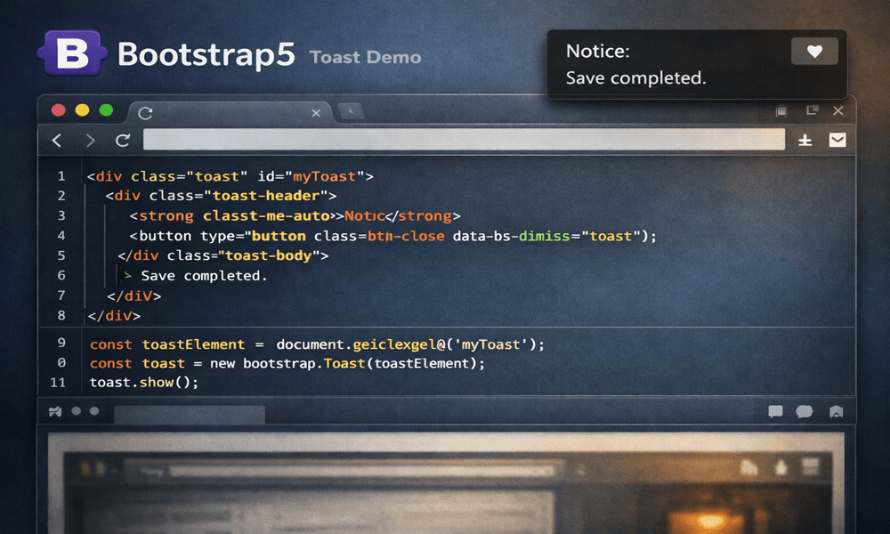

はじめに
Bootstrapには様々なコンポーネントがありますが、その中でも「トースト（Toast）」は、ちょっとした通知メッセージを手軽に表示できる便利な機能です。 今回は、このトーストについて基本的な使い方を調べてみたので、実装例と合わせてまとめます。
トーストとは何か
トーストは、一時的な通知メッセージを画面端に表示するためのコンポーネントです。 スマートフォンの通知や、Windows の右下に出るポップアップのようなイメージで、次のような場面でよく使われます。
- 保存完了
- 会員登録完了
- お問い合わせ送信完了
- 商品のカート追加
- エラー通知
どんな場面で活用できるのか
Bootstrapには「Alert」コンポーネントもありますが、Alertはページ内に表示され続けるのに対し、Toastは一定時間で自動的に消えます。 そのため、ページの流れを邪魔せず「軽い通知」を伝えたい場面に向いています。
基本的な実装方法
最小構成のトーストは次のような HTML で動作します。
<div class="toast" id="myToast">
<div class="toast-header">
<strong class="me-auto">通知</strong>
<button type="button" class="btn-close" data-bs-dismiss="toast"></button>
</div>
<div class="toast-body">
保存が完了しました。
</div>
</div>
JavaScript を使う場合は次のように表示できます。
const toastElement = document.getElementById('myToast');
const toast = new bootstrap.Toast(toastElement);
toast.show();
表示位置の指定
右上に表示する例です。
<div class="position-fixed top-0 end-0 p-3">
<div class="toast">
...
</div>
</div>
Bootstrap のユーティリティクラスを使うことで、位置調整がとても簡単です。
右上に「Notice: Save completed.」と表示されるトースト通知のデモ画面。コードと動作の関係が一目でわかります。

実際に触ってみて感じたこと
Bootstrap のトーストは、少ないコードで実装できるため、JavaScript 初心者でも扱いやすいと感じました。 また、ページ遷移を伴わず通知を表示できるため、ユーザーエクスペリエンスの向上にも役立ちます。 お問い合わせフォームや会員登録機能などを持つサイトでは、活用できる場面が多いコンポーネントだと思います。
まとめ
Bootstrap のトーストは、一時的な通知を手軽に実装できる便利なコンポーネントです。
- 保存完了などの軽い通知に向いている
- 自動的に消えるため邪魔にならない
- 少ないコードで実装できる
- ユーザーの操作を妨げない